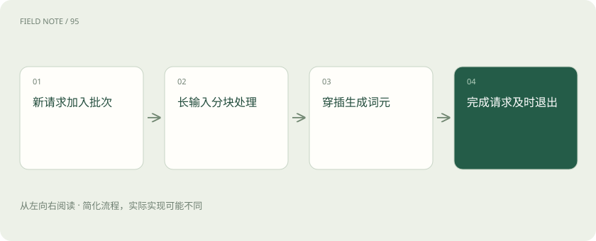

先说这篇在讲什么
餐厅里，有人点一杯水，有人点一桌菜。如果所有人都等最慢的一桌做完，短任务也会被拖住。模型服务同样要安排不同长度的输入和输出，这就是这些调度方法要解决的问题。
先看一个具体例子
离线批量总结不强调逐字流畅，可以接受更大的等待换取吞吐；在线客服则可能更重视输出间隔稳定。同一调度配置未必同时适合两类业务。
遇到陌生概念，可以先读
打个比方，帮助理解
像餐厅不断补位，同时把大桌准备工作分段穿插到小桌服务之间。
这是帮助理解的比方，实际过程以正文说明为准。
一图看懂

固定一批一起走，哪里会浪费
一批请求有的很快生成完，有的要输出很长内容。如果结束的请求不能及时腾出位置，空出来的能力就可能浪费；如果必须等凑够一批才开始，又会让用户多等。
连续批处理：完成一个，就接进新的
连续批处理允许在生成过程中动态调整正在计算的请求：一些结束后，其他等待请求可以加入。它不像每次发车后必须等整车人都完成才接下一批。具体调度仍要考虑缓存容量、任务长度和设备负担。
分块预填充：长资料分段安排计算
一次性处理很长的输入，可能让正在逐步生成的其他请求等太久。分块预填充会把这段计算拆成较小块，穿插安排。原始问题的顺序和需要的信息仍要保持，并不是把手册内容删掉一半。
效率提高，也要看谁在等待
批次更大可能提高总吞吐，却增加显存压力；分块更小有机会改善等待，也可能增加调度开销。没有一个大小对所有负载都最好。应拿有长有短的真实请求看效果，尤其关注少数等待很久的人。
读完先记住这一句
提高整体效率时，也要避免长任务让其他人一直等。
别踩这个误区
吞吐最大配置未必适合交互体验，批量大小也不能无限增大。
想一想
连续批处理与分块预填充是同一个开关吗？
不是，前者管理请求动态加入退出，后者改变长输入预填充的调度粒度。
关联阅读
资料与边界
本文为原创知识讲解。类比和图示经过简化；示例数字不代表实测或报价。整理日期：2026-11-04。文末列出对应技术的原始资料，具体功能与版本支持请以原文为准。
按完整目录逐篇阅读